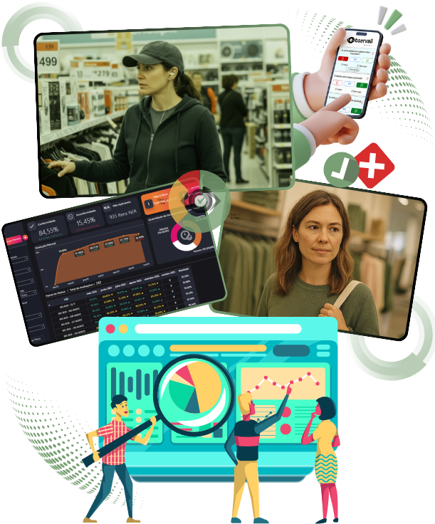
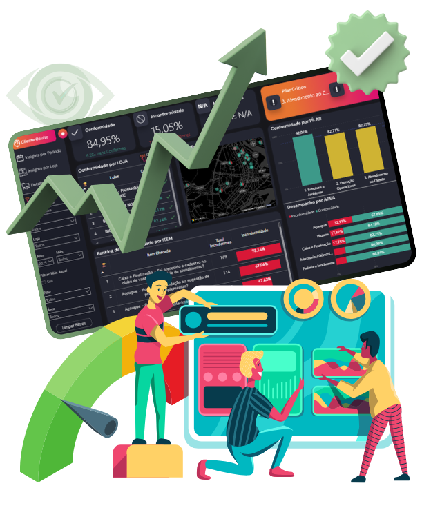
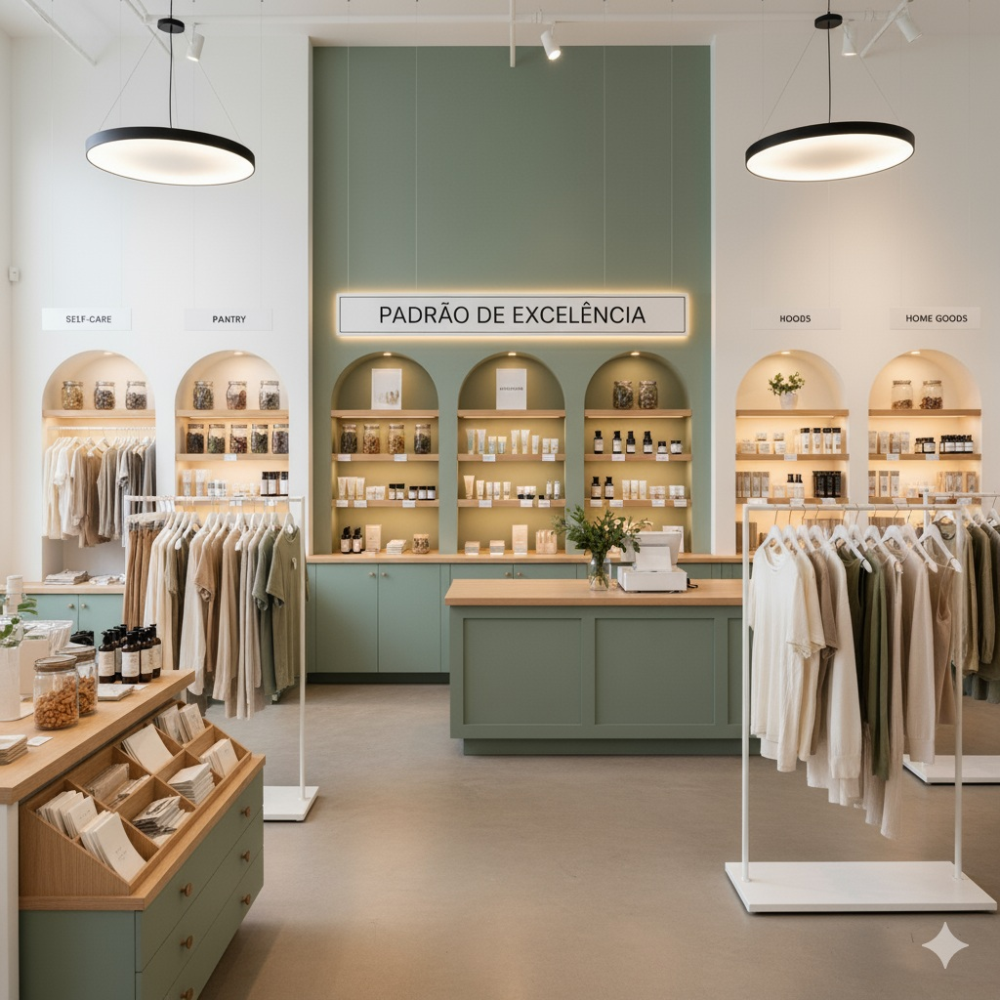
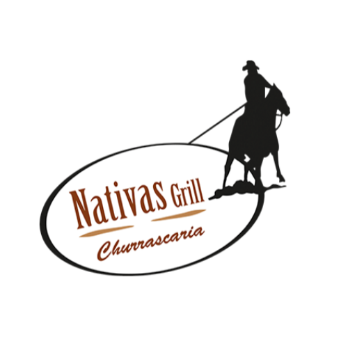

Cliente Oculto • Dados • Ação
Cliente Oculto para vender mais e padronizar sua operação.
Você compreende a experiência real do seu cliente?
A Observall revela o que impede sua loja de atingir todo o potencial de vendas, com evidências fotográficas, notas detalhadas e um plano de ação claro por loja e turno.

Menos achismo.Mais padrão. Mais resultado.
Inteligência que vira ação
Transforme a experiência do cliente em crescimento real.
A auditoria inteligente da Observall mostra exatamente o que corrigir para elevar a experiência, reduzir perdas e aumentar a conversão.
- ✓ Evidências fotográficas e notas por item.
- ✓ Análises por loja, equipe e turno.
- ✓ Insights prioritários com próximos passos.
Soluções Observall
Tudo para transformar experiência em plano de ação.
Visibilidade da jornada, padrões mensuráveis e ações práticas para evoluir continuamente.
Cliente Oculto
Avaliamos atendimento, qualidade e processos de forma discreta, com evidências reais.
Conhecer a metodologia →Dashboard em tempo real
Notas, conformidade, pontos críticos e evolução organizados para decisões rápidas.
Ver a plataforma →NPS com IA
Feedback estruturado, respostas inteligentes e promotores conectados ao Google.
Entender o NPS →Auditoria operacional
Checklists personalizados para medir a aderência aos padrões da sua marca.
Ver benefícios →Plano de ação
Falhas priorizadas com orientação clara para responsáveis, lojas e turnos.
Simular resultados →Melhoria contínua
Ciclos periódicos de avaliação para manter o padrão e acompanhar a evolução.
Escolher um plano →
Dados que mostram o caminho
Dashboard de Cliente Oculto em ação.
Acesse relatórios em tempo real, entenda o que impacta vendas e acompanhe a evolução da operação em cada loja e turno.
- 01Nota média por loja e turnoAntecipe tendências e ajuste o atendimento.
- 02Taxa de conformidade operacionalMonitore a aderência aos padrões definidos.
- 03Insights prioritários com açãoDirecione o time para o que mais importa.

Como funciona
Um processo simples, transparente e orientado a resultados.
Da definição do objetivo ao acompanhamento contínuo, cada etapa vira evidência e ação.
-
01
Briefing guiado
Entendemos seus objetivos e desenhamos um plano claro para a auditoria.
-
02
Visitas de cliente oculto
Avaliamos a jornada e registramos evidências fotográficas em cada etapa.
-
03
Dashboard & relatórios
Consolidamos notas por item, loja e turno, com insights acionáveis.
-
04
Monitoramento de evolução
Acompanhamos o progresso e ajustamos o plano para manter padrões elevados.
Benefícios
Encontre pontos críticos. Corrija rápido. Evolua com dados.
360°
Visão completa
Cobertura dos pontos de contato online e offline para mapear a jornada e reduzir atritos.
→
Insights acionáveis
Métricas objetivas e próximos passos para o time agir com prioridade.
∞
Melhoria contínua
Ciclos de checagem periódicos com plano de ação para manter padrões elevados.
MB
Maria Beatriz★★★★★
“Excelente atendimento, equipe muito atenciosa. Recomendo!”
IA
Resposta automáticaObrigado pelo carinho! Ficamos felizes em superar suas expectativas.
4,9/5no Google
Reputação e fidelização
Mais estrelas no GooglePromotores direcionados à avaliação pública.
IA que responde feedbacksRespostas rápidas, personalizadas e adequadas ao contexto.
Feedback estruturadoPrazos e responsáveis para cada ponto crítico.
Crescimento contínuoIndicadores que fecham o ciclo de melhoria.
NPS com IA que gera resultados reais.
Promotores com notas 9 e 10 são conduzidos para avaliar sua loja no Google, enquanto avaliações neutras e detratoras se transformam em planos de ação internos.
Resultados esperados
Simule o potencial de ganho da sua operação.
Com a Observall, você corrige rapidamente o que trava as vendas e melhora a experiência.

Por que dá resultado
O padrão deixa de ser opinião e vira evidência.
- ✓ Checklists com fotos mostram o que ajustar.
- ✓ O plano prioriza cada loja e turno.
- ✓ A reputação evolui com respostas mais rápidas.
Marcas que confiam
Resultados construídos ao lado dos nossos clientes.
Projetos de cliente oculto, NPS e auditoria aplicados em operações reais.




Depoimentos verificados
O que nossos clientes dizem.
Relacionamento próximo e melhorias contínuas orientadas por dados.
“Os relatórios detalhados nos ajudaram a identificar oportunidades e reforçar boas práticas. O resultado é uma experiência mais fluida e satisfatória.”
★★★★★
“A análise criteriosa nos ajudou a ajustar processos e elevar o padrão de atendimento. Hoje temos mais segurança na execução.”
★★★★★
“Como gestora, é fundamental ter uma visão clara do que acontece na linha de frente. A Observall transformou informação em direcionamento.”
★★★★★
Quem somos
Quem é a Observall?
A Observall atua com cliente oculto, auditoria de experiência, NPS e inteligência operacional para transformar dados reais em melhoria contínua.
Nossa metodologia combina visitas de cliente oculto, roteiros personalizados, evidências fotográficas e dashboard em tempo real para que gestores saibam exatamente onde agir.
Roteiros desenhados para cada operação, unidade e objetivo de negócio.
Notas, fotos e recomendações organizadas para orientar decisões rápidas.
Relação consultiva para transformar relatórios em execução e evolução.
Segmentos atendidos
Roteiros personalizados para cada operação.
A Observall atende varejo, restaurantes, hotelaria e operações correlatas com checklists adaptados ao contexto.
Planos para resultados
Escolha o nível certo para sua operação.
Transforme cada visita em ação com um programa adequado ao momento da sua empresa.
Observall Start
Para começar com Cliente Oculto de forma simples e objetiva.
- Checklist inteligente.
- Evidências fotográficas.
- Dashboard de notas e conformidade.
- Insights para correção rápida.
Grow
Experiência imersiva de alinhamento e treinamento com o time.
- Tudo do plano Start.
- Encontro presencial com a Observall.
- Treinamento da jornada do cliente.
- Simulações reais na operação.
Scale
Avaliação completa da jornada em operações de hotelaria.
- Tudo do plano Grow.
- Recepção, check-in e contatos.
- Restaurante e alimentação.
- Estrutura, limpeza e conforto.
FAQ • Observall
Dúvidas frequentes.
Entenda como avaliamos a experiência, geramos evidências e transformamos visitas em ações práticas.
Falar com especialistas →O que a Observall faz exatamente?+
Somos especialistas em cliente oculto e inteligência para varejo, restaurantes e hotelaria. Avaliamos a jornada, registramos evidências, pontuamos por item e entregamos plano de ação por loja e turno.
Como funciona o processo de avaliação?+
Começamos com briefing e padrões; realizamos visitas com checklist e evidências; consolidamos resultados no dashboard; e acompanhamos a evolução.
O NPS direciona promotores para o Google?+
Sim. Promotores com nota 9 ou 10 podem ser encaminhados ao Google Meu Negócio. Notas neutras e detratoras são tratadas internamente com plano de ação.
Quais segmentos a Observall atende?+
Varejo, restaurantes, hotelaria e operações correlatas, como atacadistas, conveniências, drogarias e padarias. O roteiro é personalizado.
Qual a frequência ideal de visitas?+
Depende do objetivo. Em geral, indicamos de 1 a 4 visitas por mês por loja para manter o ritmo de correções e medir a evolução.
Como recebo os resultados?+
Em um dashboard em tempo real com nota média, conformidade, insights prioritários e evidências. Relatórios executivos também podem ser enviados.
Quanto tempo para ver resultados práticos?+
Os primeiros ganhos costumam aparecer em 30 a 45 dias, conforme correções rápidas entram em prática e a equipe adota o novo padrão.
Privacidade e ética: a equipe saberá das visitas?+
A identidade dos avaliadores é preservada. Os resultados são orientados à melhoria de processos e não à exposição individual.
Como começamos e qual o prazo de implantação?+
Após briefing, definimos roteiro e checklist, configuramos o dashboard e agendamos as visitas. A implantação leva, em média, de 1 a 2 semanas após aprovação.
Sua operação perfeita é a nossa prioridade
Quero implementar a Observall na minha empresa.
Cliente Oculto, NPS com IA e relatórios estratégicos para agir com clareza.
Falar com consultor agora